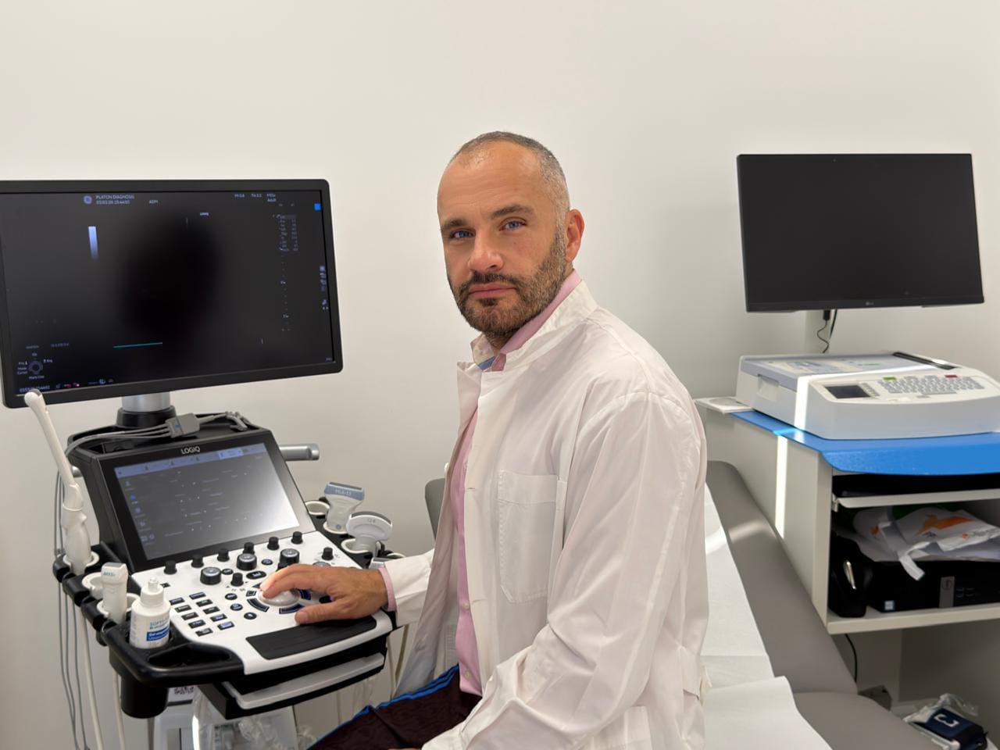

Με διεθνή εμπειρία και επίκεντρο τον άνθρωπο. Σύγχρονη διάγνωση, πρόληψη και εξειδικευμένη αντιμετώπιση.
Ο Γιάννης Μπαφάκης (MD) είναι Ειδικός Καρδιολόγος με εκτεταμένη κλινική και ερευνητική πορεία. Αποτελεί Επιστημονικό Συνεργάτη του Ιατρικού Κέντρου Αθηνών, καθώς και των νοσοκομείων Hôpitaux Iris Sud στις Βρυξέλλες (Βέλγιο), διατηρώντας άμεση επαφή με τις σύγχρονες ευρωπαϊκές ιατρικές εξελίξεις. Παράλληλα, διατελεί Επιστημονικός Υπεύθυνος στο κέντρο "Πλάτων Διάγνωση".
Το επιστημονικό του έργο είναι άρρηκτα συνδεδεμένο με το Ιπποκράτειο Γενικό Νοσοκομείο Αθηνών. Εκεί όχι μόνο ολοκλήρωσε την ειδικότητά του, αλλά παραμένει σταθερός συνεργάτης της Μονάδας Υπέρτασης (Α’ Πανεπιστημιακή Καρδιολογική Κλινική). Ταυτόχρονα διαθέτει Διδακτορικές Σπουδές με αντικείμενο την ανθεκτική υπέρταση και τις βλάβες στα όργανα-στόχους.
"Προσεγγίζω τον ασθενή ολιστικά, εστιάζοντας στην έγκαιρη διάγνωση, την πρόληψη και τη σωστή ρύθμιση των καρδιαγγειακών παραγόντων κινδύνου."
Με στόχο την άμεση και ποιοτική εξυπηρέτηση των ασθενών του, δραστηριοποιείται σε ένα επιλεγμένο δίκτυο ιατρείων στην Αττική, εξετάζοντας περιστατικά στο Κολωνάκι, τη Βουλιαγμένη και τον Ωρωπό.
Η πρόληψη σώζει ζωές. Ο καρδιολογικός έλεγχος (check-up) περιλαμβάνει κλινική εξέταση, ηλεκτροκαρδιογράφημα και λήψη ιστορικού. Απευθύνεται σε άτομα χωρίς ιστορικό πάθησης και σε αθλητές που χρειάζονται βεβαίωση ιατρού για αθλητικές δραστηριότητες.
Πλήρης και εξειδικευμένος καρδιολογικός έλεγχος μέσα από πολυετή εμπειρία ως καρδιολόγος στο Ιατρικό Κέντρο Αθηνών και στα νοσοκομεία των Βρυξελλών. Το triplex καρδιάς απευθύνεται σε ασθενείς για παρακολούθηση αρτηριακής υπέρτασης, δυσλιπιδαιμίας, στεφανιαίας νόσου και καρδιακής ανεπάρκειας.
Παρέχονται σύγχρονες και αξιόπιστες καρδιολογικές υπηρεσίες με στόχο την ολοκληρωμένη διάγνωση και παρακολούθηση της καρδιακής λειτουργίας. Με έμφαση στην ακρίβεια, την ασφάλεια και την εξατομικευμένη φροντίδα, οι υπηρεσίες μας καλύπτουν πλήρως τις ανάγκες πρόληψης, διάγνωσης και παρακολούθησης των καρδιολογικών παθήσεων.
Εξετάσεις πραγματοποιούνται κανονικά στα ιατρεία σε Κολωνάκι, Βουλιαγμένη και Ωρωπό. Στόχος μας είναι η καλύτερη δυνατή προσβασιμότητα και η άμεση εξυπηρέτηση των ασθενών κατόπιν ραντεβού.
Η εξειδίκευση και η συνεχής παρουσία σε κορυφαία νοσοκομεία και διεθνή συνέδρια αποτελούν την εγγύηση για την υγεία σας.
Η καθημερινή κλινική τριβή ως Επιστημονικός Συνεργάτης στο Ιατρικό Κέντρο Αθηνών και στα νοσοκομεία των Βρυξελλών, διασφαλίζει την αντιμετώπιση ακόμα και των πιο σύμπλοκων περιστατικών με διεθνή πρότυπα.
Με Διδακτορικές Σπουδές από την Ιατρική Σχολή Αθηνών, το ερευνητικό έργο πάνω στην Αρτηριακή Υπέρταση εγγυάται πως η θεραπεία βασίζεται στις πιο σύγχρονες κατευθυντήριες οδηγίες.
Διαθέτει πλούσιο συγγραφικό έργο και έχει παρουσιάσει κλινικές μελέτες στα μεγαλύτερα παγκόσμια συνέδρια (ESC, ACC, AHA).
Η συνεργασία με την Α' Πανεπιστημιακή Καρδιολογική Κλινική του Ιπποκράτειου Νοσοκομείου, παρέχει ένα ισχυρό "δίχτυ ασφαλείας" για διαχείριση περιστατικών που χρήζουν εξειδικευμένων επεμβάσεων.
"Εξαιρετικός ιατρός αλλά το πιο σημαντικό, πολύ καλός άνθρωπος. Έκατσε μαζί μας να μας εξηγήσει όλες μας τις εξετάσεις και το πώς πρέπει να κινηθούμε από εδώ και..."
Athanasiou M
Review from Google • 5/5
"Εξαιρετικός επιστήμονας,ευγενής και πολύ λεπτολόγος στις εξετάσεις του. Με σεβασμό στον κάθε ασθενή και όποτε τον χρειαστείς πάντα εκεί. Εδώ και χρόνια δεν τον αλλάζω με κανέναν!! Ευχαριστώ!!!!!"
Νατάσα Τόδωρη
Review from Google • 5/5
"Εξαιρετικός γιατρός λεπτολόγος υπομονετικός μου έλυσε όλες τις απορίες που είχα του συστήνω ανεπιφύλακτα"
Nikos Nanopoulos
Review from Google • 5/5
"Επισκέφθηκα το ιατρείο για έναν καρδιολογικό έλεγχο! Δεν εχω συναντήσει πιο ευγενικό γιατρό! Μου τα εξήγησε όλα υπέροχα! Επαγγελματίας!"
Panagiotis Mavraganis
Review from Google • 5/5